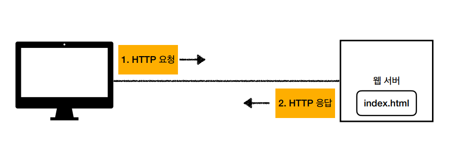
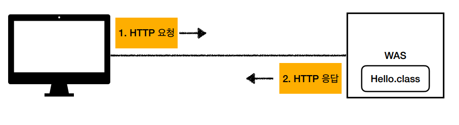
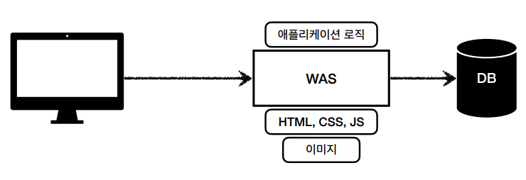
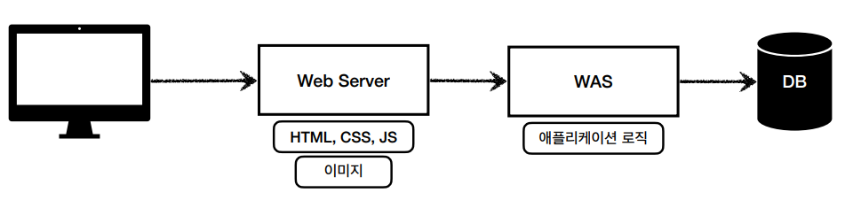
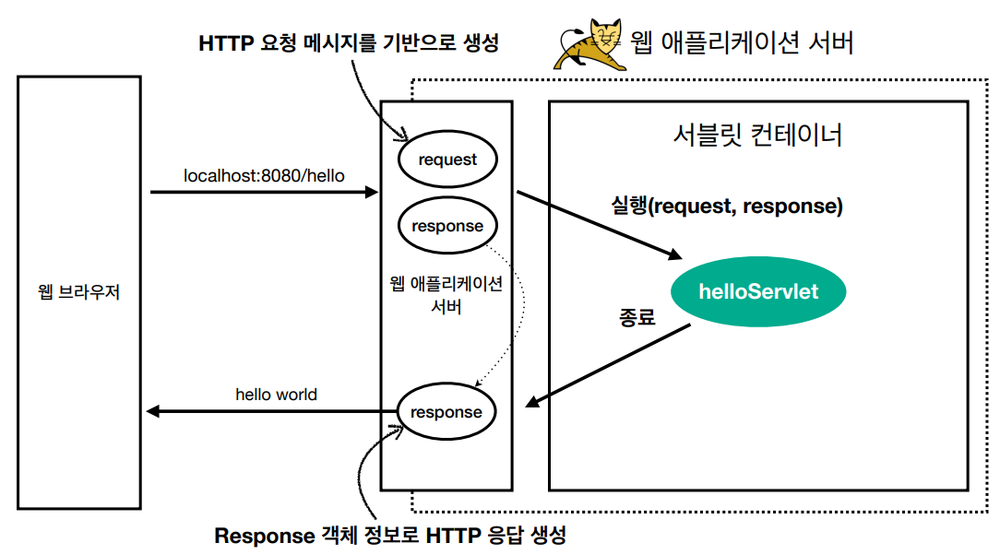
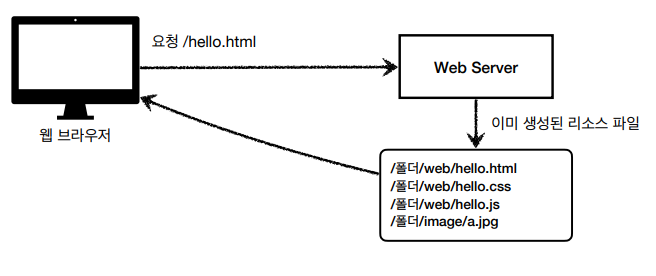
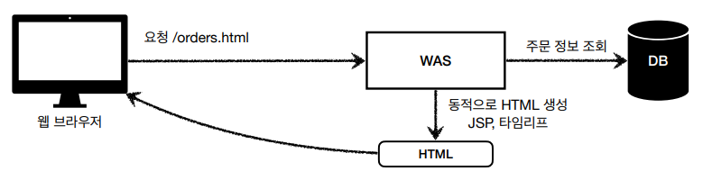
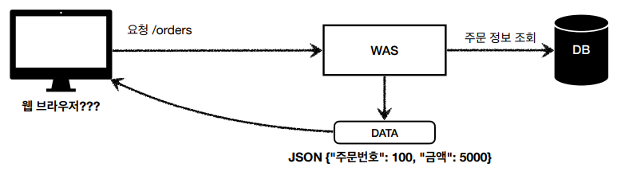
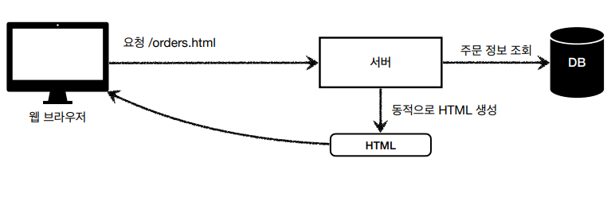
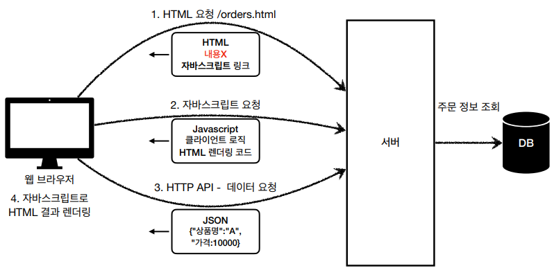

웹 - HTTP 기반
HTTP 메세지에 모든 것을 전송
- HTML, TEXT
- IMAGE, 음성, 영상, 파일
- JSON, XML (API)
- 거의 모든 형태의 데이터 전송 가능
- 서버간에 데이터를 주고 받을 때도 대부분 HTTP 사용
웹 서버(Web Server)
- HTTP 기반으로 동작
- 정적 리소스 제공, 기타 부가기능
- 정적(파일) HTML, CSS, JS, 이미지, 영상
- 예) NGINX, APACHE

웹 애플리케이션 서버(Was - Web Application Server)
- HTTP 기반으로 동작
- 웹 서버 기능 포함 (정적 리소스 제공 가능)
-
프로그램 코드를 실행해서 애플리케이션 로직 수행
- 동적 HTML, HTTP API(JSON)
- 서블릿, JSP, 스프링 MVC
- 예) 톰캣(Tomcat), Jetty, Undertow

웹 서버, 웹 애플리케이션 서버(WAS) 차이
- 웹 서버는 정적 리소스(파일), WAS는 애플리케이션 로직
-
사실은 둘의 용어 경계도 모호함
- 웹 서버도 프로그램을 실행하는 기능을 포함하기도 함
- 웹 애플리케이션 서버도 웹 서버의 기능을 제공함
-
자바는 서블릿 컨테이너 기능을 제공하면 WAS
- 서블릿 없이 자바코드를 실행하는 서버 프레임워크도 있음
- WAS는 애플리케이션 코드를 실행하는데 더 특화
웹 시스템 구성 - WAS, DB
- WAS, DB 만으로 시스템 구성 가능
- WAS는 정적 리소스, 애플리케이션 로직 모두 제공 가능
- WAS가 너무 많은 역할을 담당해서 서버 과부화 우려가 있음
- 가장 비싼 애플리케이션 로직이 정적 리소스 때문에 수행이 어려울 수 있음
- WAS 장애시 오류 화면도 노출 불가능

웹 시스템 구성 - WAS, DB
- 정적 리소스는 웹 서버가 처리
- 웹 서버는 애플리케이션 로직같은 동적인 처리가 필요하면 WAS에 요청을 위임
- WAS는 중요한 애플리케이션 로직 처리 전담
-
효율적인 리소스 관리
- 정적 리소스가 많이 사용되면 Web 서버 증설
- 애플리케이션 리소스가 많이 사용되면 WAS 증설
- 정적 리소스만 제공하는 웹 서버는 잘 죽지 않음
- 애플리케이션 로직이 동작하는 WAS 서버는 잘 죽음
- WAS, DB 장애시 WEB 서버가 오류 화면 제공 가능

서블릿
@WebServlet(name = "helloServlet", urlPatterns = "/hello")
public class helloServlet extends HttpServlet {
@Override
protected void service(HttpServletRequest request, HttpServletResponse response) {
//애플리케이션 로직
}
}
특징
- urlPatterns(/hello)의 URL이 호출되면 서블릿 코드가 실행
- HTTP 요청 정보를 편리하게 사용할 수 있는 HttpServletRequest
- HTTP 응답 정보를 편리하게 제공할 수 있는 HttpServletResponse
- 개발자는 HTTP 스펙을 매우 편리하게 사용

HTTP 요청, 응답 흐름
-
HTTP 요청 시
- WAS는 Request, Response 객체를 새로 만들어서 서블릿 객체 호출
- 개발자는 Request 객체에서 HTTP 요청 정보를 편리하게 꺼내서 사용
- 개발자는 Response 객체에 HTTP 응답 정보를 편리하게 입력
- WAS는 Response 객체에 담겨있는 내용으로 HTTP 응답 정보를 생성
서블릿 컨테이너
- 톰캣처럼 서블릿을 지원하는 WAS를 서블릿 컨테이너라고 함
- 서블릿 컨테이너는 서블릿 객체를 생성, 초기화, 호출, 종료하는 생명주기 관리
-
서블릿 객체는 싱글톤으로 관리
- 고객의 요청이 올 때 마다 계속 객체를 생성하는 것은 비효율
- 최초 로딩 시점에 서블릿 객체를 미리 만들어두고 재활용
- 모든 고객 요청은 동일한 서블릿 객체 인스턴스에 접근
- 공유 변수 사용 주의
- 서블릿 컨테이너 종료시 함께 종료
- JSP도 서블릿으로 변환 되어서 사용
- 동시 요청을 위한 멀티 쓰레드 처리 지원
동시 요청 - 멀티 쓰레드
쓰레드
- 애플리케이션 코드를 하나하나 순차적으로 실행하는 것은 쓰레드
- 자바 메인 메서드를 처음 실행하면 main이라는 이름의 쓰레드가 실행
- 쓰레드가 없다면 자바 애플리케이션 실행이 불가능
- 쓰레드는 한번에 하나의 코드 라인만 수행
- 동시 처리가 필요하면 쓰레드를 추가로 생성
요청마다 쓰레드 생성하는 것의 장단점
-
장점
- 동시 요청을 처리할 수 있다.
- 리소스(CPU, 메모리)가 허용할 때 까지 처리가능
- 하나의 쓰레드가 지연 되어도, 나머지 쓰레드는 정상 작동한다.
-
단점
-
쓰레드는 생성 비용이 매우 비싸다.
- 고객의 요청이 올 때 마다 쓰레드를 생성하면, 응답 속도가 늦어진다.
- 쓰레드는 컨텍스트 스위칭 비용이 발생한다.
-
쓰레드 생성에 제한이 없다.
- 고객 요청이 너무 많이 오면, CPU, 메모리 임계점을 넘어서 서버가 죽을 수 있다.
쓰레드 풀 - 요청마다 쓰레드 생성의 단점 보완
-
특징
- 필요한 쓰레드를 쓰레드 풀에 보관하고 관리한다.
- 쓰레드 풀에 생성 가능한 쓰레드의 최대치를 관리한다. 톰캣은 최대 200개 기본 설정(변경 가능)
-
사용
- 쓰레드가 필요하면, 이미 생성되어 있는 쓰레드를 쓰레드 풀에서 꺼내서 사용한다.
- 사용을 종료하면 쓰레드 풀에 해당 쓰레드를 반납한다.
-
최대 쓰레드가 모두 사용중이어서 쓰레드 풀에 쓰레드가 없으면?
- 기다리는 요청은 거절하거나 특정 숫자만큼만 대기하도록 설정할 수 있다.
-
장점
- 쓰레드가 미리 생성되어 있으므로, 쓰레드를 생성하고 종료하는 비용(CPU)이 절약되고, 응답시간이 빠르다.
- 생성 가능한 쓰레드의 최대치가 있으므로 너무 많은 요청이 들어와도 기존 요청은 안전하게 처리할 수 있다.
쓰레드 풀 실무 팁
- WAS의 주요 튜닝 포인트는 최대 쓰레드(max thread) 수 이다.
-
이 값을 너무 낮게 설정하면?
- 동시 요청이 많으면, 서버 리소스는 여유롭지만, 클라이언트는 금방 응답 지연
-
이 값을 너무 높게 설정하면?
- 동시 요청이 많으면, CPU, 메모리 리소스 임계점 초과로 서버 다운
-
장애 발생 시?
- 클라우드면 일단 서버부터 늘리고 이후에 튜닝
- 클라우드가 아니면 열심히 튜닝
쓰레드 풀의 적정 숫자
- 애플리케이션 로직의 복잡도, CPU, 메모리, IO 리소스 상황에 따라 모두 다름
-
성능 테스트
- 최대한 실제 서비스와 유사하게 성능 테스트 시도
- 툴: 아파치 ab, 제이미터, nGrinder
WAS의 멀티 쓰레드 지원
- 멀티 쓰레드에 대한 부분은 WAS가 처리
- 개발자가 멀티 쓰레드 관련 코드를 신경쓰지 않아도 됨
- 개발자는 마치 싱글 쓰레드 프로그래밍을 하듯이 편리하게 소스코드를 개발
- 멀티 쓰레드 환경이므로 싱글톤 객체(서블릿, 스프링 빈)는 주의해서 사용
HTML, HTTP API, CSR, SSR
정적 리소스
- 고정된 HTML 파일, CSS, JS, 이미지, 영상 등을 제공
- 주로 웹 브라우저

HTML 페이지
- 동적으로 필요한 HTML 파일을 생성해서 전달
- 웹 브라우저: HTML 해석

HTTP API
- HTML이 아니라 데이터를 전달
- 주로 JSON 형식 사용
- 다양한 시스템에서 호출
- 데이터만 주고 받음, UI 화면이 필요하면, 클라이언트가 별도 처리
- 앱, 웹 클라이언트, 서버 to 서버

SSR - 서버 사이드 랜더링
- HTML 최종 결과를 서버에서 만들어서 웹 브라우저에 전달
- 주로 정적인 화면에 사용
- 관련 기술: JSP, 타임리프 -> 백엔드 개발자

CSR - 클라이언트 사이드 랜더링
- HTML 결과를 자바스크립트를 사용해 웹 브라우저에서 동적으로 생성해서 적용
- 주로 동적인 화면에 사용, 웹 환경을 마치 앱처럼 필요한 부분부분 변경할 수 있음
- 예) 구글 지도, Gmail, 구글 캘린더
- 관련기술: React, Vue.js -> 웹 프론트엔드 개발자
